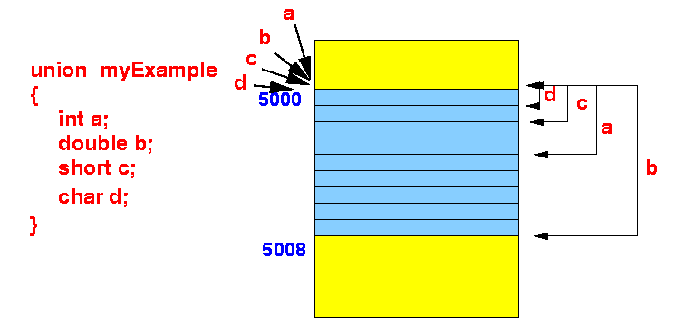

- Syntax to define a union
data structure:
union UnionName { datatype1 varName1; // List of variables datatype2 varName2; ... };Meaning:
- A union data structure
is a number of memory cells used to
store
any one
of the variables specified in the union
structure
In other words:
- The same memory cell(s)
are used to store
one of the variables in
the
list of variables
at any one time
- It is not possible to store more than one of the variables given in the list of variable at the same time
- The same memory cell(s)
are used to store
one of the variables in
the
list of variables
at any one time
Defining a union typed variable:
- Just like a struct data type,
you can define variables of
a union data type
after you have
defined the
structure of a union
data type
Example:
union myExample // Union definition { int a; double b; short c; char d; }; union myExample x; // Define a variable of the type union myExample
- A union data structure
is a number of memory cells used to
store
any one
of the variables specified in the union
structure
- How
the different variables
in a union typed variable
are stored in memory:
- Example union definition:
union myExample { int a; double b; short c; char d; };
- How the
different variable in the type
union myExample
are stored in memory:
 Observe that:
- Every member variable in
a union typed variable
start at the
same memory address
- The number of bytes used to
store a member variable
depends on the
size (= data type)
of the member variable,
- a uses 4 because it is an int type variable
- b uses 8 because it is an double type variable
- And so on.
- The size of a union typed variable is equal to the size of the largest component variable
- Every member variable in
a union typed variable
start at the
same memory address
- Example union definition:
- We can easily
show the above facts with the following
C program:
union myUnion // Union structure { int a; double b; short c; char d; }; struct myStruct // Struct with the same member variables { int a; double b; short c; char d; }; int main(int argc, char *argv[]) { struct myStruct s; // Define a struct union myUnion u; // and a union variable // Print the size and the address of each component printf("Structure variable:\n"); printf("sizeof(s) = %d\n", sizeof(s) ); printf("Address of s.a = %u\n", &(s.a) ); printf("Address of s.b = %u\n", &(s.b) ); printf("Address of s.c = %u\n", &(s.c) ); printf("Address of s.d = %u\n", &(s.d) ); putchar('\n'); printf("Union variable:\n"); printf("sizeof(u) = %d\n", sizeof(u) ); printf("Address of u.a = %u\n", &(u.a) ); printf("Address of u.b = %u\n", &(u.b) ); printf("Address of u.c = %u\n", &(u.c) ); printf("Address of u.d = %u\n", &(u.d) ); }Output:
Structure variable: sizeof(s) = 24 Address of s.a = 4290768696 Address of s.b = 4290768704 Address of s.c = 4290768712 Address of s.d = 4290768714 Union variable: sizeof(u) = 8 Address of u.a = 4290768688 (Same location !!!) Address of u.b = 4290768688 Address of u.c = 4290768688 Address of u.d = 4290768688
- Example Program:
(Demo above code)

- Prog file: click here
How to run the program:
- Right click on link(s) and
save in a scratch directory
- To compile: gcc union1.c
- To run: ./a.out
- Common uses of
union typed variables:
- As a buffer to store
a value for an
user-specified operation
The user-specified operation can receive different types of values.
- You can use
multiple
struct variables
of the same size inside
a union variable
to
re-map the different
bits to make
accessing the bit information
easier
- This technique is commonly used in
network programming to
process different message headers
- This topic is beyond the scope of this course....
- This technique is commonly used in
network programming to
process different message headers
- As a buffer to store
a value for an
user-specified operation
- Personal anecdote:
- The only time in my life
that I needed to use
a union typed variable
was when I was writing
an interpreter for a
new data base manipulation language
- I used a union typed variable
to hold value from a
parsed expression
- Example:
- The expression
3 +
4 contains
2 integer values
as operands
for the operation +
- While the expression (3 < 4) AND (4 < 5) contains 2 boolean values as operands for the operation AND
I used a union typed variable to store the operands.
- The expression
3 +
4 contains
2 integer values
as operands
for the operation +
- The only time in my life
that I needed to use
a union typed variable
was when I was writing
an interpreter for a
new data base manipulation language
- Network programming:
- When you do network programming
with different package formats,
you will encounter
unions of
many different struct
variables.
This allow you to manipulate different network protocol headers easily.
- When you do network programming
with different package formats,
you will encounter
unions of
many different struct
variables.